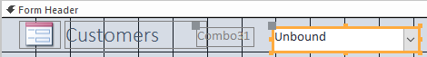
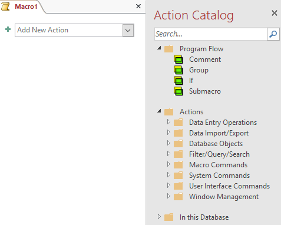
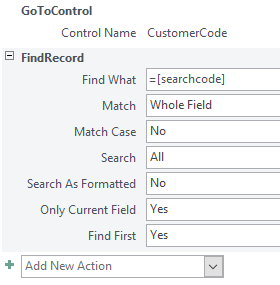
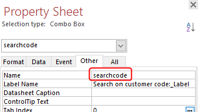
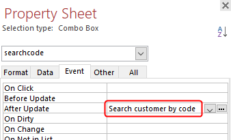

On a form is a choice list and through an assigned macro the corresponding record is
looked up.
First, a form with the data of a customer should be created. To make it easier to
find a particular customer with known customer code, the form should contain a list
box where you can enter the customer code and after that, the data of the
corresponding customer should be displayed in the form.
ANALYSIS
The base of the form can be made with a default form. The drop-down list box is the
control Combo Box. Furthermore, you have to create a macro
that performs two actions. First, go to the drop-down list box to get the entered
customer code and then find the corresponding record.
Open database candy2016.accdb.
Select table Customers. It's not necessary to open the
table.
Click tab Create > Form (group Forms).
The form is created and opened in Layout View.
Save the form with the name Search customer by code. The
easiest way to do that is through button Save in the Quick Access
toolbar.
Switch to Design View.
Select Design > Combo Box (group Controls) and then draw in the right part of the form header a rectangular
framework for the list box.
Figure 1. Form with combo box

After drawing the framework, the Combo Box Wizard is
automatically started.
Answer the consecutive questions of the Wizard as follows:
The Combo Box should get the values from a table or a query.
Table: Customers should provide the values for the combo box.
Only field CustomerCode should be added.
Sort records ascending on CustomerCode.
Accept the default width of the column.
Remember the selected value for later use.
Label text: Search on customer code:
After completing the wizard you are back in the Design
View.
When the label and the Combo Box are partly overlapping each other, you have to
move one or both of them. You do this by dragging the upper-left corner of the
object with a pressed left mouse button.
Close form Search customer by code and save the
changes.
Choose tab Create > Macro (group Macros & Code).
Figure 2. Macro window

Click on the selection arrow in the box Add New Action
and select action GoToControl from the list.
Enter CustomerCode in the box Control
Name.
Figure 3. Action GoToControl CustomerCode
Click on the selection arrow in the box Add New Action
and select action FindRecord.
Enter value =[searchcode] in box Find
What in . The other arguments are already filled in by Access
with their default values and can remain.
Figure 4. Macro Search customer by code

Close the macro window and save the macro with name Search customer
by code.
Open form Search customer by code in Design
View.
Select the Combo Box and change in the
Property Sheet (tab Other) the name in
searchcode.
Figure 5. Combo Box property Name

With still the Combo Box selected, click in Property Sheet (tab
Event) on the selection arrow in box After
Update and select macro Search customer by
code.
Figure 6. Combo Box property After Update

Close the form and save the changes.
Open form Search customer by code and test if the Combo
Box works properly.

 in the Quick Access
toolbar.
in the Quick Access
toolbar.
 (group Controls) and then draw in the right part of the form header a rectangular
framework for the list box.
(group Controls) and then draw in the right part of the form header a rectangular
framework for the list box.